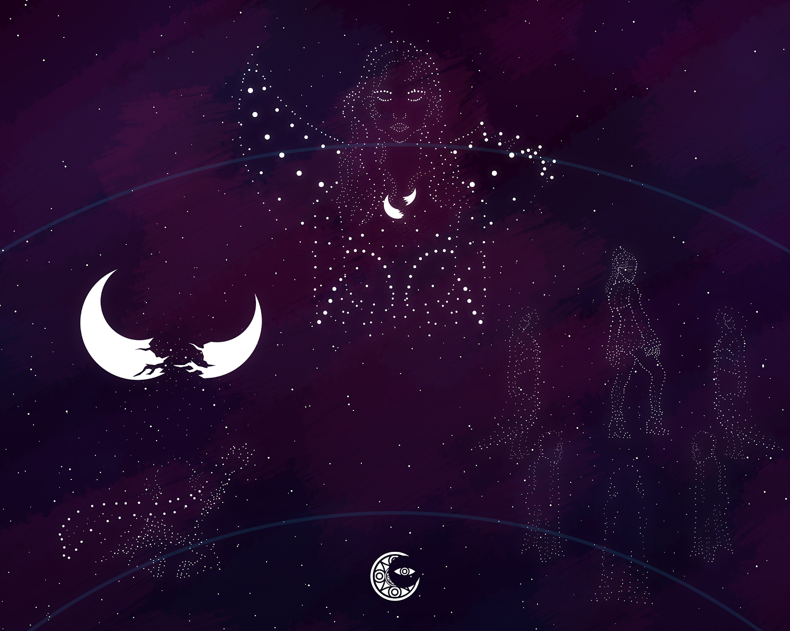

Ilang siglo na ang nakalilipas nang madiskubre ng isang babaylan ang propesiya.
Propesiyang magdudulot ng kaguluhan, kamatayan, kadiliman sa bayan.
Na sa pagbaba raw ng Diyos na Buwan ay saka kakagat ang kadiliman,
at ang liwanag ay mawawala na tila bula.
Dali-dali niyang ipinaalam sa ibang mga babaylan ang propesiya,
ngunit sa kasamaang palad ay hindi siya pinaniwalaan.
Tinawag siyang "baliw", "inutil", at "hindi tunay na babaylan".
Sinabihang siya’y nasisiraan na ng bait.
Kaya’t di rin nagtagal, binawi ang kanyang posisyon sa Konseho,
na ‘di man lang napakikinggan ang kanyang hinaing.
Ngunit sa di inaasahan, dumilim nang dumilim ang kalangitan,
at sa oras ng pighati’y ang salita lamang ng tinalikdang babaylan ang naririnig ng Konseho.
Tila sa ilaw ng buwang unti-unting naglaho,
ang propesiya’y unti-unting bumuklat.
